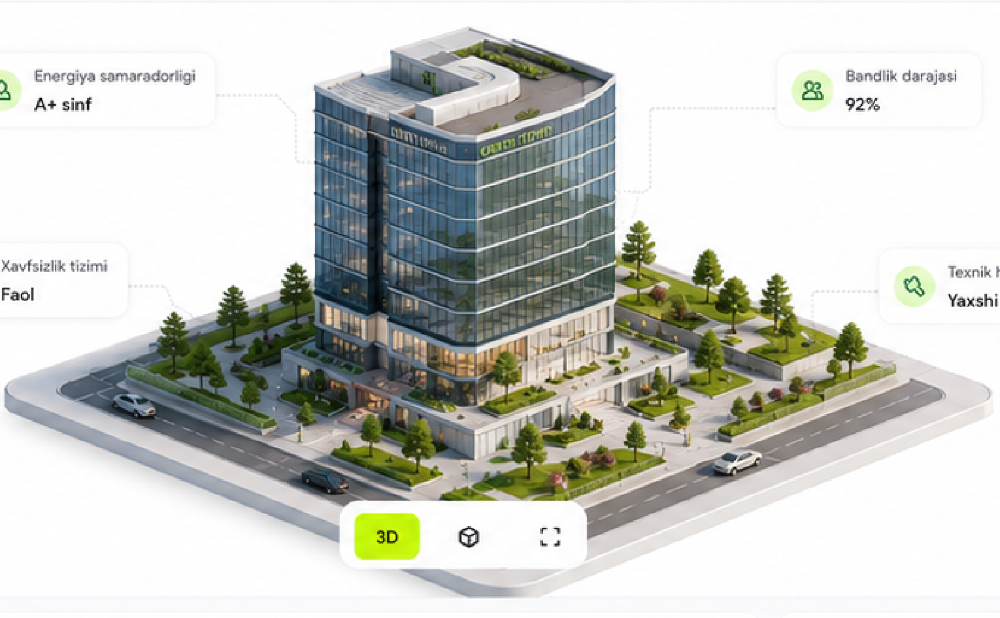

Faol
Green Tower
Biznes markazi
Toshkent shahri, Shayxontohur tumani,
Navoiy ko'chasi, 15
Navoiy ko'chasi, 15
Umumiy maydon18 560 m²
Yer maydoni4 250 m²
Qavatlar soni12
Qurilgan yili2021
HolatiFaol

Energiya samaradorligiA+ sinf
Bandlik darajasi92%
Xavfsizlik tizimiFaol
Texnik holatYaxshi
Galereya
Tavsif
Green Tower – zamonaviy biznes markazi bo'lib, 12 qavatdan iborat. Bino ofis maydonlari, konferensiya zallari, yerosti avtoturargohi va to'liq infratuzilma bilan ta'minlangan.
| Xona | Qavat | Maydon | Ijarachi | Holat |
|---|---|---|---|---|
| Ofis 501 | 5 | 1 200 m² | CRC Group | Band |
| Ofis 302 | 3 | 800 m² | CRC Group | Band |
| Ofis 204 | 2 | 450 m² | — | Bo'sh |
| Konferensiya zali | 1 | 150 m² | Umumiy | Bron qilinadi |
| Yerosti avtoturargoh | -1 | 2 400 m² | Umumiy | Faol |
Texnik pasport.pdf · 2,4 MB · 24-may 2024
Kadastr hujjati.pdf · 1,1 MB · 12-yan 2024
Ijara shartnomasi (CRC Group).pdf · 860 KB
Sug'urta polisi.pdf · 640 KB
Energiya samaradorligi
A+ sinf
A+ sinf
Bandlik darajasi
92%
92%
Xavfsizlik tizimi
Faol
Faol
Texnik holat
Yaxshi
Yaxshi
Kommunikatsiya kirish nuqtalari
Tashrif oldidan tanishib chiqish yoki mijozga ko'rsatish uchun
Suv ta'minoti—
Gaz ta'minoti—
Elektr ta'minoti—
Kanalizatsiya—
Asosiy kran/kalitlarni faqat texnik xodim yoki mas'ul operator boshqaradi. Favqulodda uzish tartibi uchun qurilmalar bo'limiga qarang.
Obyekt yangilandiTexnik holat ma'lumotlari yangilandiBugun, 11:42Akmalov L.
Yangi hujjat yuklandiTexnik pasport.pdfBugun, 09:15Rahimov S.
Xizmat ko'rsatilishi rejalashtirildiHVAC tizimi uchun profilaktika ishlari23-may, 16:30Karimov I.
Yangi ijara shartnomasi imzolandiCRC Group – 800 m², 3-qavat22-may, 14:20Akmalov L.
To'lov qabul qilindiIjara to'lovi – may, 202422-may, 10:05Soliev B.
Baholash hisoboti yangilandiYillik qayta baholash18-may, 12:00Yusupova M.